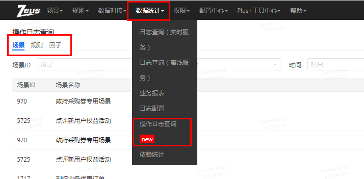
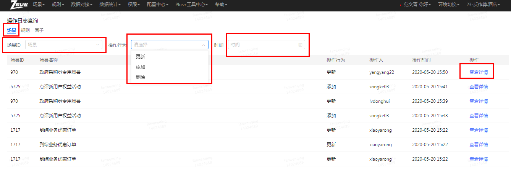
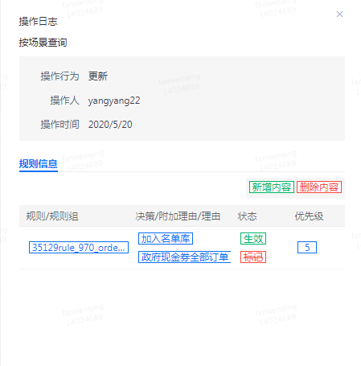
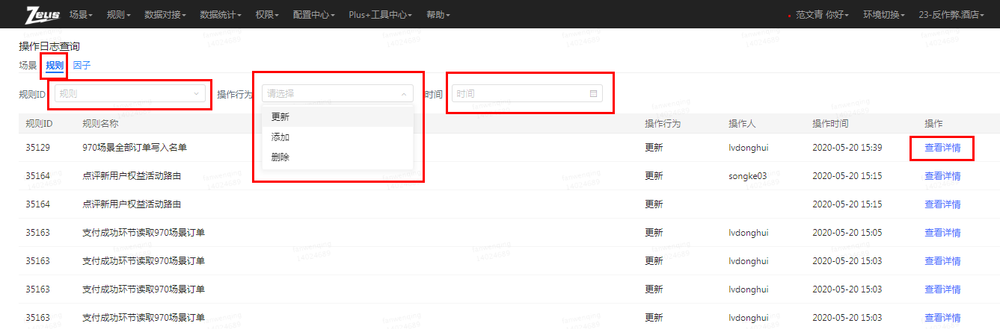
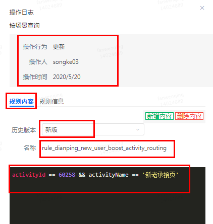
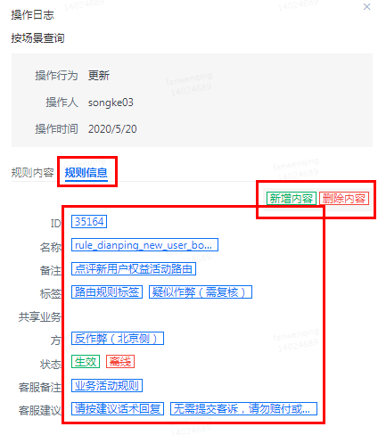
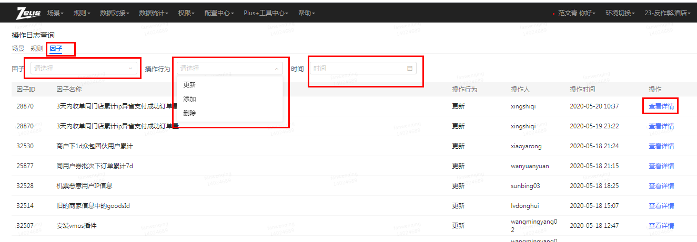
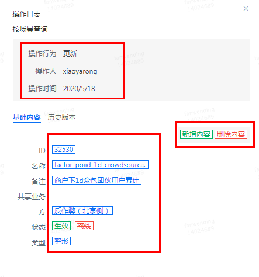
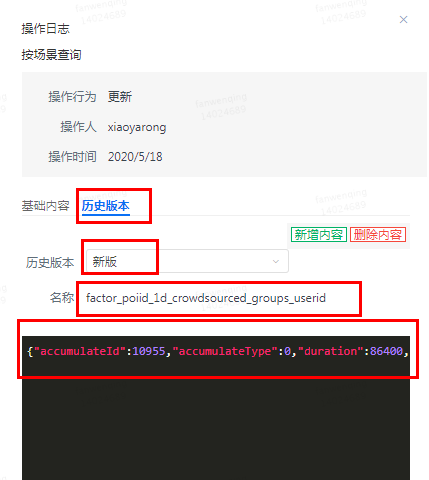

说明：操作日志查询
1.背景
Zeus上的操作日志查询 是一个安全的防控手段和记录，记录了什么时间什么人对业务方内的场景、规则、因子的添加、更新和删除行为。
2.操作说明
step1：入口
点击 数据统计->操作日志查询 进入操作日志查询页面，可以分别查看用户对 场景、规则、因子 的操作行为。

step2：按场景查询
（1）点击 场景，在查询条件框中输入要查询的场景ID、操作行为以及时间的任意组合项，删选出来要查询的场景，或者直接在下面的场景列表中找到要查看的场景，点击场景列表中展示出来的要查看的场景后面的 查看详情，

（2）点击查看详情后显示该场景的具体操作日志，包括两部分，第一部分是基础的操作信息：添加/更新/删除，操作人mis号、操作时间，第二部分是场景配置信息：展示了场景配置中的规则/规则组、决策/附加理由/理由、状态、优先级信息，以及具体新增内容是什么（用绿色字体表示），删除内容是什么（用红色字体表示）。

step3：按规则查询
（1）点击 规则，在查询条件框中输入要查询的规则ID、操作行为以及时间的任意组合项，删选出来要查询的规则，或者直接在下面的规则列表中找到要查看的规则，点击规则列表中展示出来的要查看的规则后面的 查看详情，

（2）点击查看详情后显示该规则的具体操作日志，包括三部分，第一部分是基础的操作信息：添加/更新/删除，操作人mis号、操作时间，第二部分是规则内容：规则英文名称、新版和旧版的规则内容（表达式），第三部分是规则信息：展示了规则 的ID、名称、备注、标签、共享业务方、状态、客服备注、客服建议信息，以及具体的新增内容是什么（用绿色字体表示），删除内容是什么（用红色字体表示）。


step4：按因子查询
（1）点击 因子，在查询条件框中选择要查询的因子、操作行为以及时间的任意组合项，删选出来要查询的因子，或者直接在下面的因子列表中找到要查看的因子，点击因子列表中展示出来的要查看的因子后面的 查看详情，

（2）点击查看详情后显示该因子的具体操作日志，包括三部分，第一部分是基础的操作信息：添加/更新/删除，操作人mis号、操作时间，第二部分是因子的基础内容：展示了因子 的ID、名称、备注、共享业务方、状态、类型信息，以及具体的新增内容是什么（用绿色字体表示），删除内容是什么（用红色字体表示），第三部分是历史版本：因子英文名称、新版和旧版的因子内容（表达式）。

